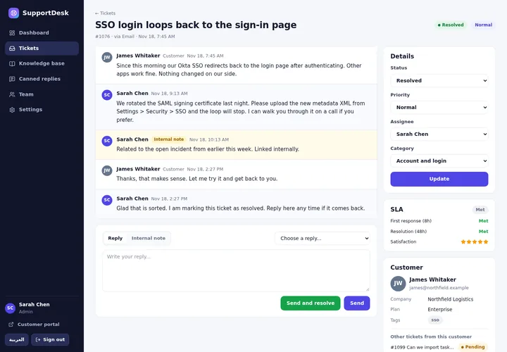
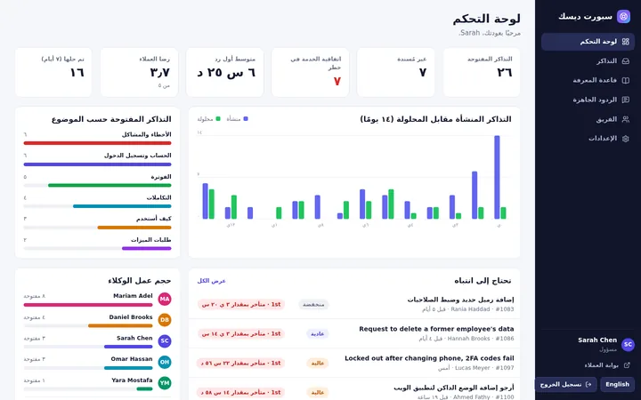
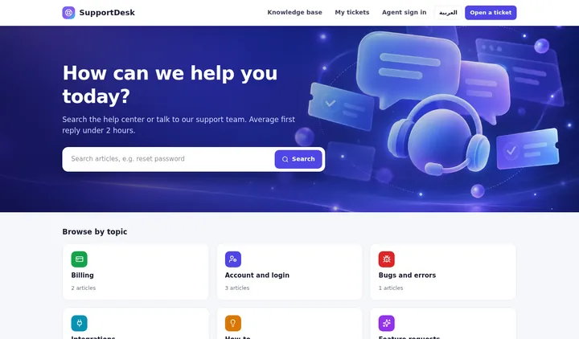
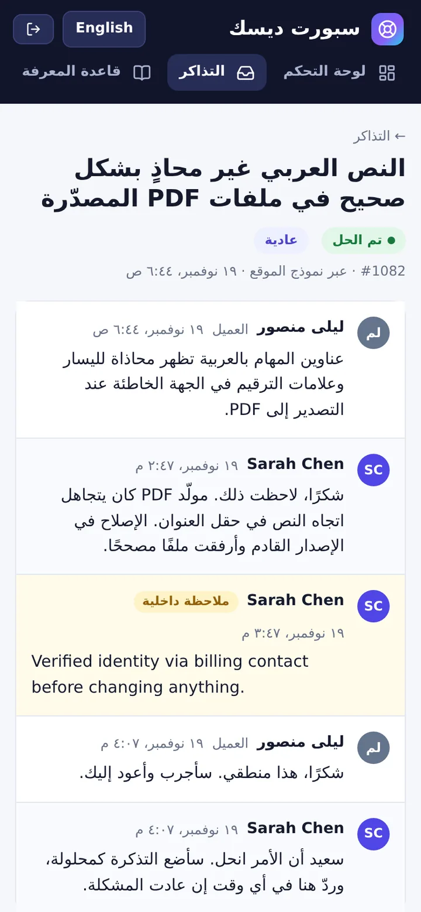

PORTFOLIO DEMO / BUILT / LIVE DEMO
SupportDesk
Every ticket, on the clock.
 ACTUAL BUILD
ACTUAL BUILDSupportDesk · Agent dashboard. Seeded demo tickets.
The problem
A support team needs to see which tickets are urgent, who owns them and which are about to miss a response target, in the customer's language.
What was built
An agent side with a dashboard, a ticket inbox with views and filters, and a ticket workspace with public replies, internal notes, canned replies and assignment. Response and resolution timers turn amber and red as the deadline nears. A knowledge base editor and team page sit beside a customer side with a help center and a portal where customers open, track, reply to and rate tickets. Everything exists in English and Arabic right to left.
The approach
Priority sets the response targets, and the clock pauses while a ticket waits on the customer. Internal notes never reach the customer view. Next.js and Prisma on SQLite keep it easy to run, and the layout adapts to phones.
The result
A hosted demo you can browse, with the repository and screenshots alongside. The hosted demo is read-only. Creating, replying and editing run in the local version.
Evidence & production limits
The hosted demo runs on seeded sample data and is read-only, because each serverless route gets its own temporary copy of the database. Browsing, search, filters, language switching and role views work. To create tickets, reply, assign and edit the knowledge base, run it locally from the repository steps.
Built / demo. All customers, agents and tickets are synthetic. No email, chat or payment provider is connected and nothing is sent. Real email channels, production sign-in, business-hours SLA and automations would be separate work. The repository README compares it honestly with Zendesk, Freshdesk and Help Scout.
Next chapter
Real email and chat channels, production sign-in and a writable database such as Postgres would be the next implementation steps.
Inside the build
Open any preview to see the full capture. Captures show test or demonstration content. All records shown are demonstration content, not evidence of client use.



